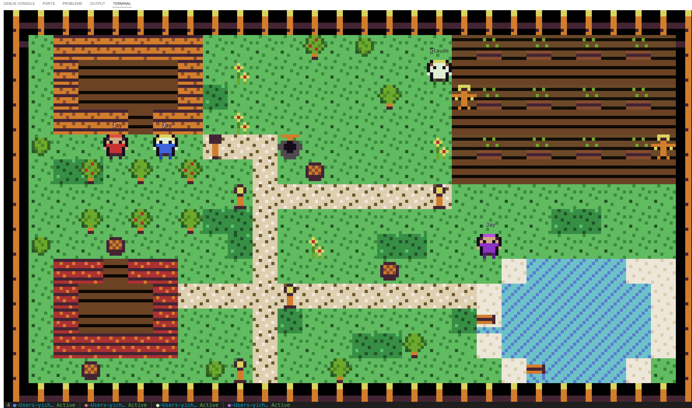
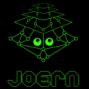

约翰斯·霍普金斯大学
计算机科学博士 · 预计 2027 年 12 月毕业
计算机科学博士候选人
约翰斯·霍普金斯大学
导师： Yinzhi Cao
我开发分析软件行为的工具，用于发现安全缺陷。
我也研究能够规划任务、调用工具的 AI 系统自身的安全风险。
PHP 应用可在运行时决定调用哪个函数，这给静态漏洞检测带来了困难。我设计并实现了 CoBrA，利用调用上下文解析动态调用并追踪不安全的输入传播，在 19 个 Web 应用中发现了 54 个此前未知的漏洞。
PHP
controller 内部的依赖
$action . "_controller" → ?
改编自 论文中的 Emoncms 示例；省略了解析、数据库初始化及另一引擎的函数体。本示例展示预设的分析状态，不执行 PHP 或 CoBrA。
用终端中的农场动画展示 Claude Code 会话状态
代码Rust展示智能体正在工作、空闲或等待输入的状态。
需要 Rust 1.85+ 和支持 24 位色的终端。
git clone https://github.com/samhsu-dev/harvest-claude.git
cd harvest-claude
cargo install --path .
harvest-claude活跃的 Claude Code 会话会自动显示为农场角色。


Joern为 PHP 安全分析贡献五类漏洞查询、回归测试和版本检查修复
代码ScalaPR #5327 · 已合并向上游贡献 SQL 注入、命令注入、代码注入、不安全文件操作及 XSS 查询，配有正反测试用例；同时修复带发行版后缀的 PHP 版本号检查。PR #5327 于 2025 年 2 月 28 日合并。
以下最小 SQL 注入用例来自已合并 PR 的测试：
<?php
$input = $_GET["username"];
$query = "SELECT * FROM users WHERE name = '$input'";
$result = mysql_query($query);该查询检查请求输入是否到达数据库调用。对应的反例使用常量输入，不应产生匹配。
在 Python 中查询 Joern 代码属性图，分析程序结构与数据流关系
代码Python支持载入导出的图、查询节点与边，并遍历它们之间的关系。
安装命令： pip install cpg2py。使用制表符分隔的 nodes.csv 和 rels.csv 导出文件。
from pathlib import Path
from cpg2py import cpg_graph
graph = cpg_graph(Path("nodes.csv"), Path("rels.csv"))
for node in graph.nodes(lambda n: n.type == "Function"):
print(node.name)输出所提供代码属性图中的函数名。
将旧版 RIPS PHP 分析器改造为命令行工具，支持 JSON 结果输出
代码PHP移除了 RIPS v0.5 对 Web 界面的依赖，增加命令行参数和 JSON 输出，便于集成自动化分析流程。分析引擎沿用已停止维护的 RIPS v0.5。
需要 PHP。请将 /path/to/php/project 替换为本地 PHP 源码目录。
git clone https://github.com/samhsu-dev/ripsv0.5-cli.git
cd ripsv0.5-cli
php rips.php /path/to/php/project --vector=xss --format=json扫描源码中的潜在 XSS，并以 JSON 格式输出结果。
2023.01 — 至今
计算机科学博士 · 预计 2027 年 12 月毕业
2021.09 — 2022.12
安全信息学硕士
2019.09 — 2020.10
软件系统工程硕士 · Distinction
2015–2019
信息与计算科学荣誉学士
2026.02 — 至今
维护 8 条用于软件漏洞发现的智能体分析流水线，开发 1 条黑盒分析流水线和 2 条动态分析流水线。
2020.12 — 2021.03
基于 Hyperledger Fabric 设计产品溯源框架，为业务敏感记录设置访问控制。
2021.09 — 至今
研究利用静态分析与模糊测试发现软件漏洞。
2022.09 – 2023
使用 C++ 和 OMNeT++ 构建仿真，研究车联网中的拒绝服务攻击与防御。
2020.06—09
开发 Python 工具，利用 Git 仓库中的协同演化关系，将测试与源码方法建立关联。
2025
助教（TA）· 约翰斯·霍普金斯大学
2023
助教（TA）· 约翰斯·霍普金斯大学
2022
课程助理（CA）· 约翰斯·霍普金斯大学
2018.07
Outstanding Achievement 奖